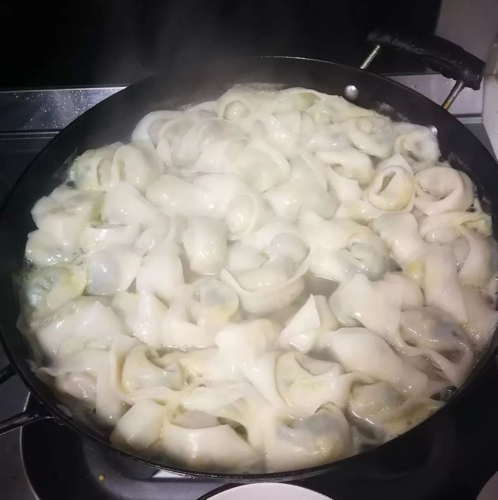
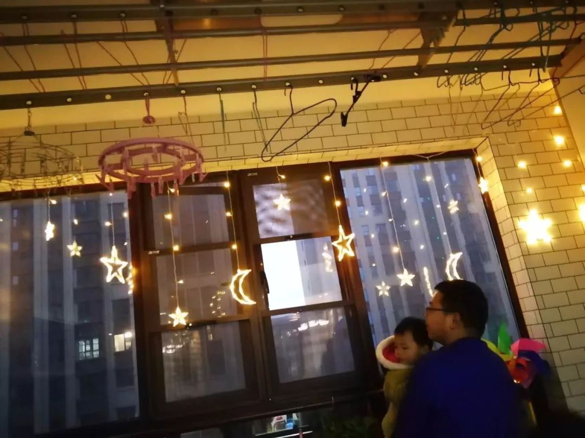

疫情期间，没口罩的硬核网友是怎样出门的？
原文链接 备份链接 ※文中涉及案例均为“反面教材”，切勿模仿。特殊时期，请大家不要存在侥幸心理，一定要规范佩戴口罩。 大家这几天还好吗？ 在疫情态势依然紧张的当下，社长最近一直积极响应号召龟缩在家，默默地 享受 承受着闲出屁来的日子，不出 …
2020年的这个春节，对吕乔来说格外重要。这是她和丈夫在湖北襄阳买房定居，拥有属于自己小家的第一个年头。
因为当地的习俗，新房第一年，吕乔要把爸爸妈妈、公公婆婆全部接来，和他们一家三口一起过年，象征着往后的日子红红火火。
意料之外的疫情局面日益严峻之后，吕乔有时会庆幸这个习俗，在逐渐逼近的疫情危机、在“封城”“封路”之前，把最牵挂的人们都聚集到自己身边。
联系上吕乔时，她所在的民政系统只留下必须的工作人员值班。敲定采访时间，她说“都可以，反正现在都在家里没什么事”。但在疫情笼罩之下，作为操持七口之家的女主人，吕乔依旧有很多的事情要忙。
再次联系到她时，她刚刚结束一次“快去快回”的生活物资采购。从除夕到现在，她和丈夫作为家庭采购代表一共出门三次，尽量速战速决，每次都在小区附近的超市解决。只有这次，为了给家里两岁的孩子采购尿不湿，才选择去小区外面“武商大”里的大超市。
出门三次，吕乔和丈夫都能逐渐感到“越来越严峻了”。
街上的人行色匆匆、超市里的人和他们一样都尽快采购、100%的口罩佩戴率……到了这次出门，小区出口已经安排了登记，并且告知明天起不再能随意进出；超市门口也有专门的体温检测，结果正常才放行。

措施日益严格，紧张的情绪也在蔓延。但吕乔反而渐渐感到一丝安心。
经历了疫情之初的惶恐和说服家人重视的心力交瘁，普通市民吕乔没有办法做更多“伟大”的事，作为妻子、女儿、母亲，她只能尽力维护家人的健康周全，再努力创造一些缝隙里的快乐。
吕乔的回复常常很慢。在挤牙膏一样的字句背后，是忙乱的照顾孩子、做饭……生活在湖北的吕乔是被疫情砸中的“倒霉版我们”，但她又足够警觉而幸运，全家健康。在暴风眼的宁静里，吕乔一家带我们看到了疫情之下的另一个侧面：反思、警惕，以及在灾难里努力经营生活的勇气。

曾经“野味”是寻常
1月17日，新闻里首次爆出肺炎疫情时，经常关注新闻报道的吕乔还和同事轻松地讨论。同事从汉口火车站回来，有点咳嗽，吕乔还打趣她说“不会你也传染上了吧”。这个一晃而过的“热点”连谈资都算不上，没有人过分在意。
四天之后的21日，当吕乔从襄阳保康接父母回到襄阳市区时，她忽然意识到了疫情的严峻，“口罩脱销了”。
重金难求的口罩仿佛是个信号。

吕乔和同事们到处买口罩，但很多地方都没有了，小区门口的药房则规定限购。吕乔记得一个很深刻的对比：22日晚上，她出门去鼓楼北街——襄阳最繁华的街道，只有一半以上的人戴了口罩；到了23日，她去顾客不多的小区超市购物，十个人中便只有一两个没戴口罩了。
这个变化令吕乔更加警觉。
她开始劝说家人都戴上口罩、重视疫情，甚至希望有武汉接触史、要带野味狗獾子来尝鲜的公公婆婆不要来了。
但家人们依旧不以为然。吕乔老家住在神农架附近的山里，家族里向来有打野味、吃野味的传统，那些真正“从山里到餐桌”直接猎来的野味，在老家常被作为最好的食物用来招待客人。腊月二十六（1月20日），吕乔去山里的伯伯家吃饭时，曾做过猎人的伯伯还特意买了一只麂子招待她。
寻常的野味在疫情之下变得狰狞。吕乔很焦虑，一边劝说家人不要吃野味、戴口罩，一边忧心忡忡地担心公公婆婆的身体。在疫情舆论笼罩全国之前，警觉的吕乔度过了心力交瘁的节前日子。
“感觉所有担子都在我一个人身上”，因为每天唠叨疫情、在新闻报道远未覆盖之前就不断提醒家人消毒、洗手，吕乔的丈夫觉得她很烦，两人一度闹得很不愉快。吕乔的妈妈更是很坚决：“我懒得戴口罩！”
只有一个人在乎的家庭防疫毫无意义，吕乔感到崩溃。幸好，随着新闻报道铺天盖地的提醒与疫情事实的升级，加上她不间断地努力劝说，家人们终于开始逐渐重视起来。

吕乔家的团年饭。彼时她还在焦虑家人的身体状态，好在有惊无险
春节时，吕乔和表哥通话，表哥说别人送了他一个麂子腿，因为看到新闻中关于野味病毒的报道，表哥赶紧扔掉了这个曾经很是“宝贝”的野味。“年轻人的接受程度可能更好，但年纪大了还是不容易改变。”吕乔把表哥扔掉麂子腿的事情跟妈妈讲，妈妈觉得“特别可惜”，而更固执的公公则依旧坚信，病毒是“美国的生化武器”，是“坏得很的美国鬼子”引爆了这场危机。
一家人因为疫情朝夕相处，吕乔不愿过多争辩。随着新闻报道比例的增加、管控措施的逐渐严密，固执的老人们虽然不惧野味，但对“会传染给家人”格外在意，也渐渐感到后怕。
在疫情笼罩的大环境里，感冒了的公公开始主动每天测体温、在家里也戴着口罩。“他们觉得害怕了，也知道不出门了”，吕乔的妈妈有时想要出门到小区走走，不等吕乔反对，公公就会首先劝说她“不让出门就不出门”。

暴风眼的宁静
春节以来，湖北疫情日益严峻，确诊人数也在不断攀升。
但暴风眼中的吕乔，反而比之前安心了许多。“之前比较焦虑，主要是因为家人不重视。现在他们都开始害怕了，我反而放心了。”
这个提防着病毒、没办法出门的新年，打破了很多“计划”。
吕乔说起，很多同事早早买好了回老家的车票与年礼，但因为担心传染，最终放弃；自己和丈夫本来打算开车带着父母去西安自驾旅行，如今也泡汤了，只能在疫情还没严重之前，挑一个没有人的公园，戴好口罩，陪着不常来市里的父母匆忙走一走。
但吕乔依旧在努力经营。毕竟，这是一次非常难得地、一个真正“团圆”的年。“往年说是团圆过年，但实际上都在走亲戚、串门、互相盘问比较，留给至亲的时间反而最少。”
这段突如其来的空白时间，吕乔一家和父母、公婆都留在家里，大家一起包饺子、一起照顾宝宝，一起追一部剧。吕乔的妈妈和婆婆会一起做家务，各自做不同喜欢吃的菜；爸爸和公公会帮忙洗碗，老人们还会带着吕乔的女儿一起在屋里跳广场舞，是特殊时期里别样的温馨。

吕乔一家人合力包好的饺子
大年初七那天，是吕乔女儿的两岁生日。她本来想买个蛋糕为女儿庆祝，但是疫情之下，蛋糕店纷纷关门，到底还是没能买到。但好在全家人齐聚，身体健康，可以一起对她说生日快乐，把陪伴、祝福与祈盼都给她。
没有蛋糕，吕乔就用抖音为她拍了个生日视频，用软件里的蛋糕特效填补真实世界里的遗憾。
不成行的旅行、没吃到的蛋糕都可以之后再补，只要家人平安健康，吕乔就心满意足。

女儿学会的新词——口罩
2月1日，黄冈发布通知，每户家庭每两天可指派1名家庭成员上街采购生活物资，其他人员除生病就医、疫情防控工作需要、在商超和药店上班外，不得外出。
黄冈有了“出行管控”，襄阳不知道会不会更加严格。但面对接下来不知何时结束的封闭生活，吕乔还是很有信心，因为一家人始终在一起。
“在危难时刻，只有家人才是最重要的，家人在一起会让你有勇气面对接下来的困难！不管如何，我们都将一起面对！”小区封闭之后，依靠附近的超市，可以买到除了“珍贵”消毒用品以外的生活物资维持基本生活，“再撑一个月没有问题”。
让吕乔更担心的反而是农村老家的情况。留守在农村的老人们本就有根深蒂固的“拜年串门”传统，就算关系不是特别好的人，过年也一定要去别人家里坐坐，拜年喝茶，不去会被视为彼此有意见。再加上老人们不会上网，重视程度恐怕会更不够。返乡的年轻人都是在外务工人员，拜年习俗和“一年一次”的团聚机会更是不断增加传染概率。
网络上那些广受关注的“硬核村长喊话”、暴力毁路封路，在吕乔的了解里收效甚微，难以撼动熟人社会的“年俗”根基。“我们村也有开车放喇叭宣传，也有封路的情况，但是据我所知，还是有一些亲友仍在串门，重视不够。”
宣传之外，农村的物资更是大问题。
村民平时不可能在家中存有备用的口罩，如今这样的形势，老家偏远，村民们更是不可能买到口罩，村干部到处募集，在城市生活的吕乔口罩储量也日益告急，爱莫能助。
“我希望能有物资支援农村地区。”吕乔希望政府能更加重视农村地区的防疫，从宣传力度到物资储备，吕乔渴望老家的乡亲们不只有大喇叭的徒劳喊话，也能有政府科学的防疫指导、有干净的口罩保护自己。
吕乔两岁的女儿最近也学会了这个新词——“口罩”。
牙牙学语的年纪，本该以一些更美好的事物开场，去认识这个世界。但这个特殊的、没办法走在阳光下的春节，小朋友要和父母长辈一起都戴上“口罩”，要听着他们讨论“口罩”的重要与紧俏，以这样的方式认识它。

疫情之下的封闭生活让平日忙碌的爸爸有了更多时间陪伴孩子
但吕乔不愿意把这件事想得太过沉重，她更愿意尽可能平淡地看待它，看待这场疫情，也看待可见和不可见的危机。
“没有特意去教，就学会说新事物了，真是好聪明的宝宝！”顺着吕乔的思路，我也第一次跳出疫情肆虐以来的“悲伤逻辑”，去单纯夸奖一个孩子的“语言学习”。
“谢谢！”这一次，吕乔回复得很快。
她发来他们的全家福，照片里，刚刚学会说“口罩”的小朋友被正在为她剥桔子的爸爸圈在怀里，眼神澄澈地看着镜头。
吕乔很确定，她的女儿将学会更多事物的名字，也能很快地走在春天里。
（吕乔为化名）
原文链接 备份链接 ※文中涉及案例均为“反面教材”，切勿模仿。特殊时期，请大家不要存在侥幸心理，一定要规范佩戴口罩。 大家这几天还好吗？ 在疫情态势依然紧张的当下，社长最近一直积极响应号召龟缩在家，默默地 享受 承受着闲出屁来的日子，不出 …
原文链接 备份链接 【编者按】 28日，我们收到了一位名为“尘香”的读者来信，她是武汉人，退休在家，和丈夫、女儿、女婿一起留守在武汉市江汉区：截至2020年1月29日24时，武汉市累计报告新型冠状病毒感染的肺炎病例已达2261例，死 …
原文链接 备份链接 - 疫 情 之 下 - 只有在这样的特殊时刻，我们才体会到平平常常的日子是多么美好，多么幸福…… ” 疫情爆发得如此迅猛，让所有人始料未及。 己亥年腊月二十九，公历2020年1月23日，我去单位上年前最后一天班，那时我 …
原文链接 备份链接 1 农历二十九。去药店，排队买口罩。 前面一位五十多岁、身穿墨绿色工作服的大叔，从胸前的口袋里掏出一个信封，倒出一堆折叠得方方正正的纸块。展开一个个纸块，现出一张张二十元、十元、五元的纸币。 有种看穿越剧的错觉。之后， …
原文链接 备份链接 童言是生活在新加坡的三明治专栏作者。自1月23日确诊第一例“新型冠状病毒肺炎”病例以来，目前新加坡已确诊18个病例，在海外确诊数据中排名第三，仅次于日本、泰国。 这场“肺炎”疫情牵动着许多在海外中国人的心绪。华人群体 …